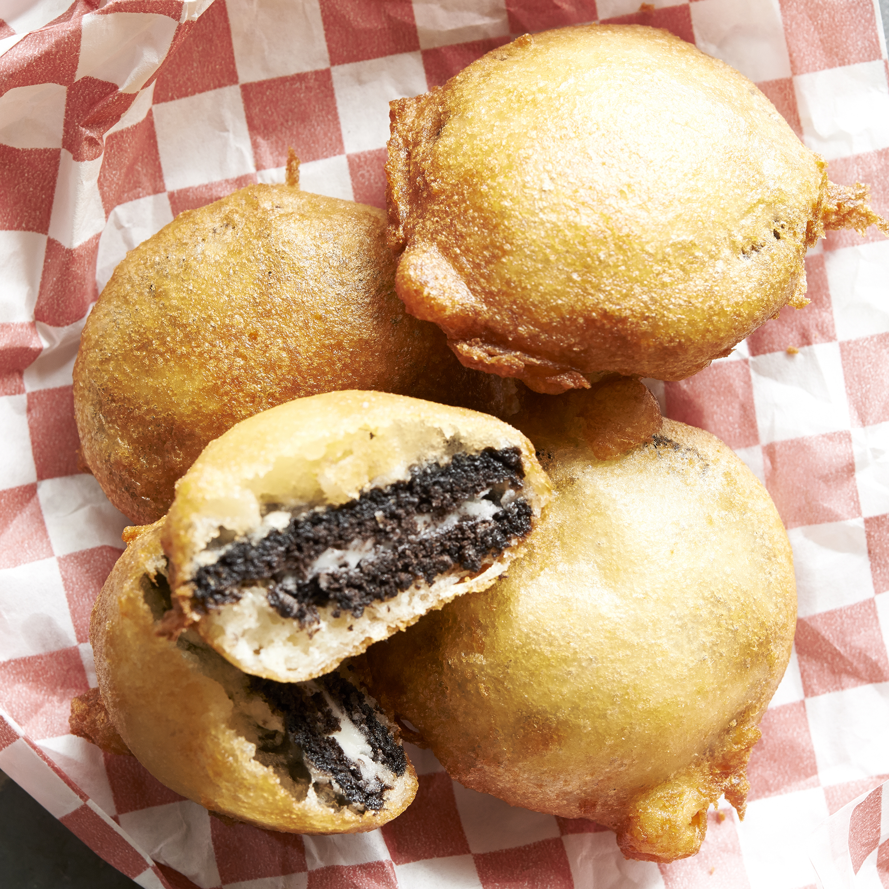

Deep Fried Oreos

deep-fried-oreos
Description
This is a carnival staple. Oreos are dipped into pancake batter and deep fried.
The recipe can be done without a deep fryer.
Ingredients
- 2 quarts vegetable oil
- 1 large egg
- 1 cup milk
- 2 tsp vegetable oil
- 1 (18 ounce) oreo cookies
Steps
- Heat oil in deep-fryer to 375 degrees F (190 degrees C).
- Whisk together the egg, milk, and 2 tsp of vegetable oil in a bowl until smooth. Stir in the pancake mix until no dry lumps remain.
- Dip the cookies into the batter.
- Carefully place into the hot frying oil. Only fry 4-5 at a time to avoid overcrowding in the deep fryer.
- Cook until the cookies are golden-brown, about 2 minutes.
- Drain on a paper towel-lined plate before serving.